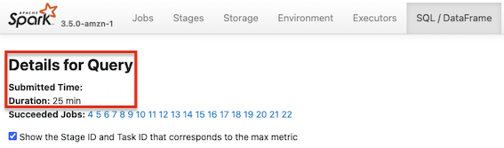
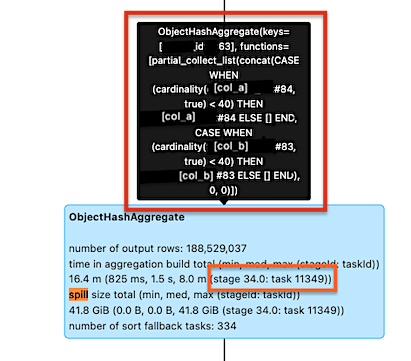
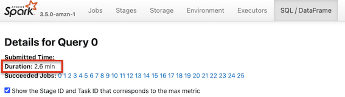

We all know that performance optimization in distributed computing frameworks like Spark can be challenging, especially when dealing with large datasets. One common issue that can drastically affect performance is *data skew – the uneven distribution of data across different partitions or nodes. This imbalance can lead to inefficient processing, increased shuffle operations, and excessive memory usage, which ultimately results in performance degradation and even job failures due to spilling.
In a recent project, we hit a significant bottleneck in our Spark SQL queries. Even though the query was logically correct, it performed poorly due to data skew and spilling.
In this post, we'll walk you through the problem we faced, the steps we took to diagnose and address the issue, and the results of our optimization efforts.
We'll cover the following aspects:
Our initial query looked something like this:
WITH agg AS (
SELECT
id,
COLLECT_SET(col_a) AS col_a_set,
COLLECT_SET(col_b) AS col_b_set
FROM some_table
WHERE
date = some_date
AND some_predicate IS NOT NULL
GROUP BY
id
)
SELECT
a.col_a,
ARRAY_DISTINCT(
FLATTEN(
COLLECT_LIST(
CONCAT(
CASE WHEN CARDINALITY(col_a_set) < 40 THEN col_a_set ELSE ARRAY() END,
CASE WHEN CARDINALITY(col_b_set) < 40 THEN col_b_set ELSE ARRAY() END
)
)
)
) AS ids_set
FROM some_table a
LEFT JOIN agg b
ON a.id = b.id
GROUP BY a.col_a
While this query was logically fine, it had a pretty long execution time of 25 minutes:

At first glance, it looked like a skew/spilling issue.
It seems that the task is *skewed.
Boom 💥, we found it:
We ran a simple query and found the join column (`id`) was skewd:
>>> df = (spark
.table("some_table")
.filter(
(col("date") == "some_date")
& (col("some_predicate").isNotNull())
)
.groupBy("id")
.agg(count("*").alias("count_key"))
.orderBy("count_key", ascending=False)
)
>>> df.show(100, False)We had two options:
`RoundRobinPartitioning`) since we didn't want to change the query logic.
With repartitioning, the data will spread evenly across all available partitions using the Spark SQL hint /*+ REPARTITION(200) */.
Same query with repartition:
WITH agg AS (
SELECT /*+ REPARTITION(200) */
id
,COLLECT_SET(col_a) AS col_a_set
...
18GiB/200 = 90MiB, meaning that we will have partitions with ~90MiB and keep the GC cycles as low as possible.
After making the change, we saw a significant improvement in query time by 90% (2.6 min!)🤯 🤯 🤯. The data skew and spilling issues were gone.
Data skew and spilling are common issues in distributed computing and can sometimes be hard to identify. By understanding the data distribution and applying techniques like repartitioning and salting, along with appropriate configuration tuning, you can significantly improve the performance of your Spark jobs.